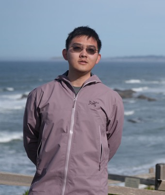

UC Berkeley EECS · Research Overview
Yuanbo Pang · Berkeley RDI/BAIR (Prof. Dawn Song) · Tomizuka Lab · Founder, Equile
yuanbopang@berkeley.edu · yuanbopang.pro

In one slide
Agents' Last Exam — 1K+ executable tasks, automated graders, verifiable rewards. Co-first author.
roboqa — what robot-learning data is worth, measured at EgoDex scale. Tomizuka Lab.
Equile — reproducible computing environments with provenance for every result.
2 preprints (HF #1 of week / #2 of day) + 1 under review at ICLR 2027.
Agents' Last Exam · arXiv:2606.05405 · under review, NeurIPS 2026
load / start / evaluate, sandboxed VM, computer-use included.ALE · under the hood
roboqa · Tomizuka Lab, advised by Zhuo Xu
Also on the bench
Turning the world's scientific codebases into agent-learnable environments; trained PhAI-IDE model family on verified trajectories. arXiv:2609.19134.
Agent evaluation in game-development environments — with Dawn Song's group.
Founded Apr–Oct 2026. Reproducible computing environments + clusters for research agents; every result traceable to how it was made.
Where this is going
Thank you
Yuanbo Pang · UC Berkeley EECS '26
yuanbopang@berkeley.edu · yuanbopang.pro · github.com/yuanboP
ALE: agents-last-exam.org · arXiv:2606.05405 / ScienceIDE: arXiv:2609.19134